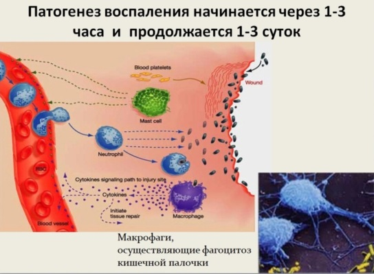

Некро́з или омертве́ние — это патологический процесс, выражающийся в местной гибели клеток, ткани или органа в живом организме в результате какого-либо экзо- или эндогенного её повреждения. Некроз проявляется в набухании, денатурации и коагуляции цитоплазматических белков, разрушении клеточных органелл и, наконец, всей клетки.
Наиболее частыми причинами некротического повреждения ткани являются: прекращение кровоснабжения (что может приводить к инфаркту, гангрене ) и воздействие патогенными продуктами бактерий или вирусов (токсины, белки, вызывающие реакции гиперчувствительности, и др.).
Некрозом называют гибель тканей, целых органов или их частей в живом организме.
Причиной гибели ткани может быть непосредственное разрушение их каким-либо агентом (физическим или химическим), а также косвенные изменения: аллергическая реакция, нарушения иннервации и кровообращения.
Травматический некроз является результатом прямого действия на ткань физических или химических факторов. Такой некроз возникает при воздействии радиации, низких (отморожение) и высоких (ожоги) температур в краях раневого канала, при электротравме. Среди химических факторов выделяют действие кислот, вызывающих коагуляционный некроз, и щелочей, вызывающих колликвационный некроз. Травматический некроз является разновидностью прямого некроза, который развивается после воздействия агента непосредственно на ткань.
Токсигенный (Токсический) некроз развивается в результате действия на ткани токсинов как бактериального, так и небактериального происхождения, химических соединений различной природы (кислоты, щёлочи, лекарственные препараты, этиловый спирт и др.).
Таков, например, некроз эпителия проксимального отдела нефрона при отравлении сулемой, некроз кардиомиоцитов при воздействии дифтерийного экзотоксина.